About Conversational User Interfaces
In recent years, conversational user interfaces (CUIs) have become more popular with the most advanced offering something approaching a fluent, spoken conversation between humans and machines. Conversational interaction can benefit users in situations where their hands and/or their visual attention are not available, such as when driving a car or cooking in a kitchen. They also help in situations where the user’s needs do not map well to the hierarchical information structure of many online systems, which make it tedious to drill down for terse information.
The Project
Research and prototype a conversational user interface that reimagines the retail dressing room experience. In particular, the solution should find harmony between the CUI's functional and interactive form.
Avi Romanoff, Sharon Rajkumar, Rae Lasko
Spring 2017 | 3 weeks
Basic Research Highlights
Sourced from research in the psychology of buying
- Setting influences emotion, emotion influences behavior
- Mirrors influence lighting, spaciousness, self-image
- Effective salespeople are similar to customers demographically
- Visit to dressing room strongly predicts purchase
- 90% of people use dressing rooms
- 84% ask friends
Competitve Analysis
Kaziunas et al (CHI ’11):
Surveyed and studied users about UI, privacy, social. Key insight: input from friends highly very influential. Prototyped dressing room with social and UI focus.
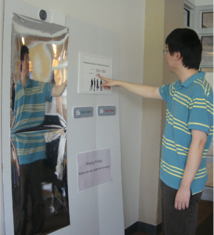
Ralph Lauren
RFID recognizes items, mirror shows sizes, colors, recommendations. “Call an associate” button summons salesperson (via iPad). Configurable lighting: Fifth Ave Daylight, East Hampton Sunset, Evening at The Polo Bar. Supports multiple languages and automatic translation of sales assistant. Currently in use.
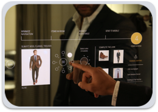
Ikebukuro
Camera scans customer's body and allows user to browse Urban Research clothes. Try on clothes virtually in the store via augmented reality and screen responds to movements and simulates how the clothing moves and how it fits on their virtual image.
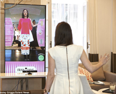
Rebecca Minkoff
RFID item detection for mirrored display that shows videos and inspirational content. Shoppers touch the surface to request associates to prepare fitting rooms, order drinks and change the environment’s lighting. Mobile app integration.
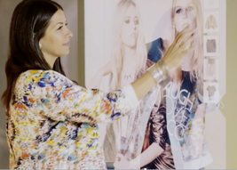
Exploratory Scenarios and Preliminary Exploration
We then imagined a variety of possible futures with CUIs in the retail space and narrowed it down to three:
- Bring the dressing room home: A touch screen projector is attached to a regular mirror that makes it smart. A virtual stylist answers questions about choice of clothes and also make suggestions on what to purchase. You can ask the CUI to suggest jewelry, shoes, bags and other outfits. Add shortlisted items to a trunk. Trunk is sent home. Keep only the ones you want.
- A customer browses clothes on her favorite store’s website. She adds a bunch of clothes she wants to try out to the store’s dressing room. Later that afternoon she visits the store and checks in with the CUI outside the dressing room. An associate arrives with refreshments for her to enjoy while the dressing room is stocked with the clothes she had wanted to try on.
- A customer is in the dressing room and wants to ask her friend Emily what she thinks of the blouse she has tried on. She asks the room to start a FaceTime call with Emily. The room agrees and soon Emily appears in a live chat window on the mirror.
We decided to choose the first scenario because our research and competitive analysis showed that people were uncomfortable speaking out loud in a public dressing room especially about sensitive topics (“Can I get a bigger size?”). We also found untapped potential in the online shopping space where consumers are hesitant to make purchases without first seeing what clothing would look on them. Additionally, we chose to make the CUI a fashion assistant that makes recommendations because we found that consumers often seek the advice of friends but worry they may not be impartial. Finally, we opted to send users a trunk of the clothing they select for try-on purposes to further decrease the users’ perceived risk of online shopping.
Use Cases:
- Planning what to wear for special occasions
- Shopping from home with in-store dressing room experience
- Finding matching accessories for outfit
How It Works Overview:
- User interface is a mirror
- The conversation is displayed as an overlay
- Whenever relevant, the user use the touchscreen
- However the interaction is primarily speech based
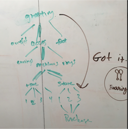
Conversation Tree Diagram
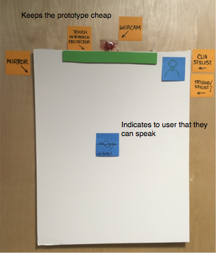
Paper Prototype
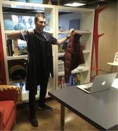
Hold up items to ask for an opinion
Selection Based UI Rendering:
Using a combination of selection and voice provides users more flexibility when wanting to minimize noise (i.e. a sleeping spouse) and accessibility for deaf or mute users. It also aids in discovery and lowers the learning curve by providing in context suggestions.
Note that the image depict all of the steps as remaining on the screen though in the actual product only the current step and previous step would be shown.
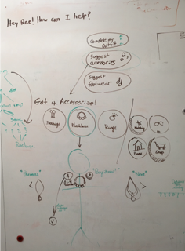
Conversation tree
Experience Prototyping and User Testing
Next we built an interactive paper prototype using a real mirror and a Wizard of Oz.
To depict the augmented reality overlay of ties and necklaces, we hung them on the string. The Wozzers pulled the string back and forth as the user tried them on:
User Scenario: Your task is to find and purchase a matching (tie/necklace) for the outfit you have on.
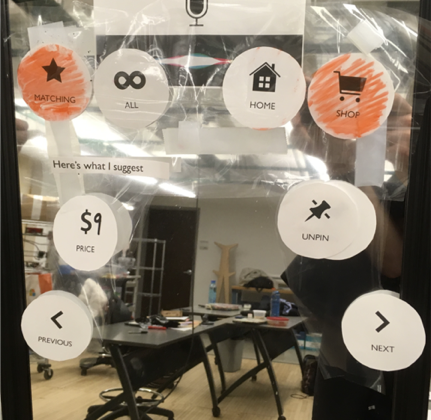
Close up of the interface (AR overlay of necklace/tie not shown)
Results
- Users were very prone to tapping instead of speaking
- Was unclear to the audience that the string ties were an AR overlay but the user thought it was very obvious
- Some awkward transitions from silence to voice interface
- Error recovery should verbally suggest next steps
- Should avoid using gender
- The trunk aspect was unnecessary
- CUI should be more apparent and more active
- Security concerns because of the camera
Final Iteration
Major Revisions from Previous Iteration:
- We thought that the users’ propensity for touching the screen instead of talking were mainly due to the classroom environment and the WOZ setup that encouraged users to tap. To combat this we built a higher fidelity interface that is able to give feedforward for speaking in the form of a moving audio wave, and is less distracting because there is no WOZ. We chose to keep the multi-modality input recognition for accessibility and to allow users the option to not disturb others in their home.
- Instead of matching the gender of the agent to the user, we opted for an androgynous CUI to avoid alienating non-cisgendered users.
- To address the awkward transitions from the voice interface to the touch interface and vice versa, we added audio and visual feedback.
- We added a physical shutter that is operated solely by the user to promote the perception of control and privacy.
- We decided to focus our final demo on one aspect of the CUI that we did not explore in detail before - color selection and theory
Final Iteration Description
We decided to pitch our project as an Amazon product called Amazon EchoView. Amazon would sell the units at cost to consumers and every purchase made using the device would receive a nominal discount. Amazon’s profits would come from the increased purchases made by consumers and consumers would purchase the device as an investment. Though Amazon would be the primary retailer, other companies would be able to build plugins for their own catalogue, much as Amazon’s Alexa has “skills”. We chose to make our CUI, Ash, an androgynous sibling of Alexa’s who’s persona is specialized to their job - helping people make clothing decisions. One of Ash’s specialties is color theory where they detect the two primary colors the user is wearing and suggest a third accent color in the form of an accessory. Ash is wholly integrated into Amazon’s e-commerce purchasing platform and is able to both suggest items from the user’s past purchases as well as new items from the catalog.
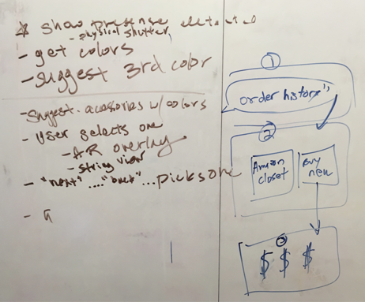
Demo Outline
Physical Form
Though not a key part of the project, we also designed the physical form that our CUI would take. This would be mounted above the user's existing mirror and project the AR overlay down.
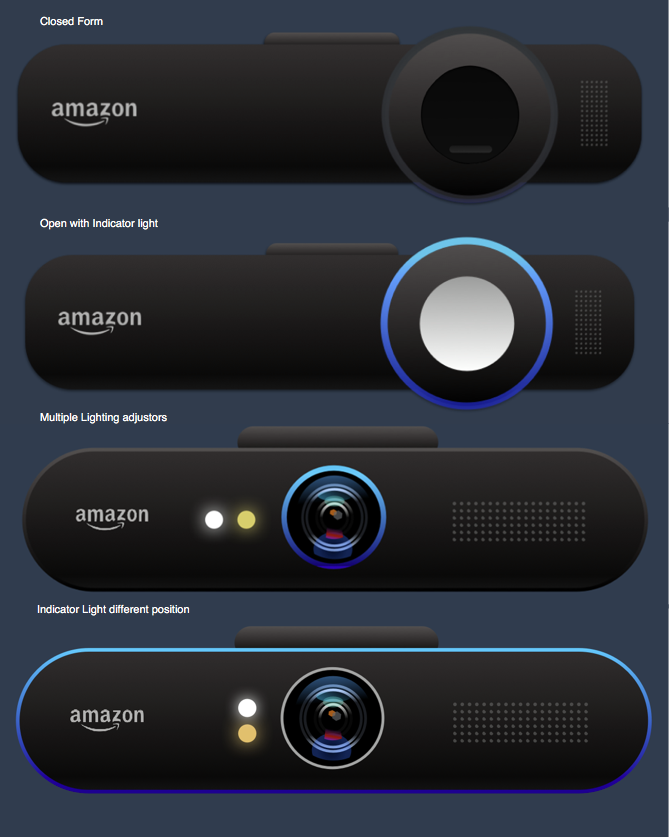
Physical Form Iterations
We eventually chose a version that included only a single light that changed value and hue to mimick different lighting situations. We also chose to place the "on" indicator light around the outside of the device to be more noticeable:
User and Scenario
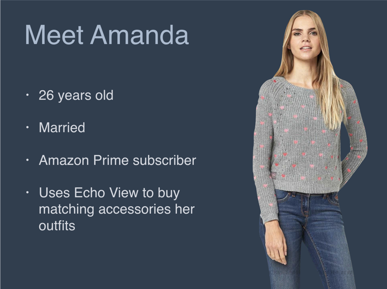
Persona of the Demo User
Amanda is going to a party on Friday and wants to find a matching scarf for the outfit she'll be wearing. She wants the scarf to make a bold finish for her outfit.
To help Amanda, Ash draws on a combination of Color Theory from Joseph Albers, and the fashion theory, such as the rule of three, from leading fashion experts.
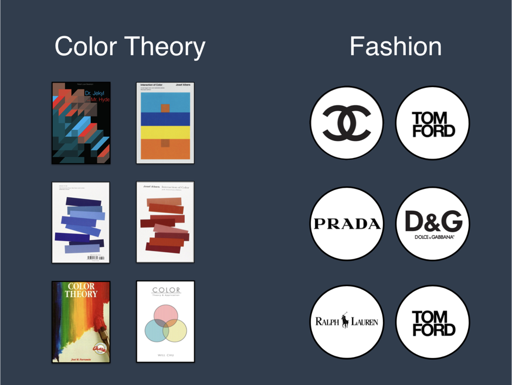
Graphical Representation of Ash's Intelligence
Ash uses it's knowledge of color theory and fashion in order to recommend three color options that Amanda can use to accomplish the rule of three and complete her outfit.